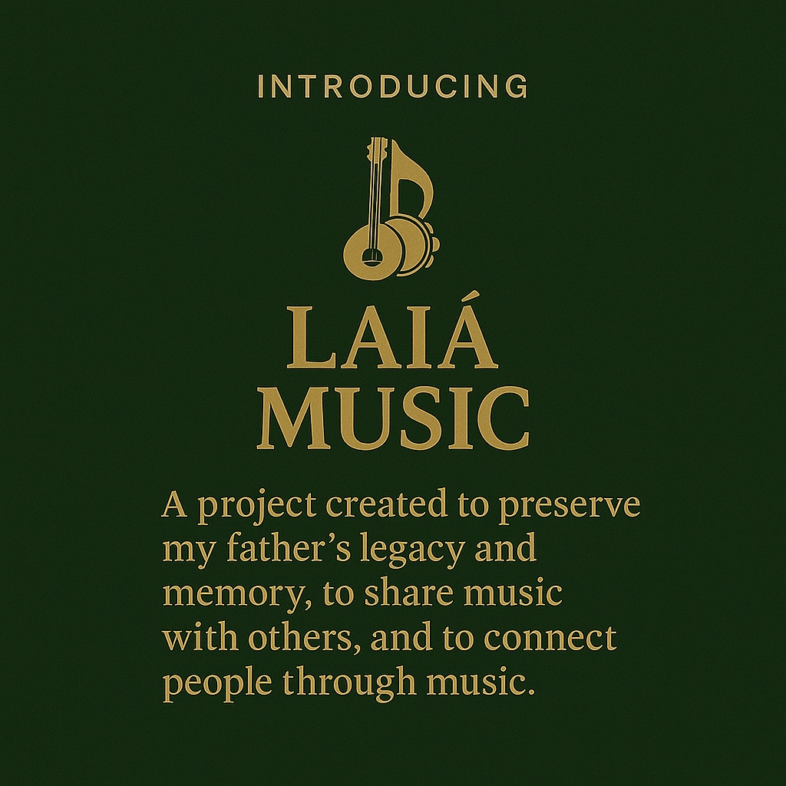
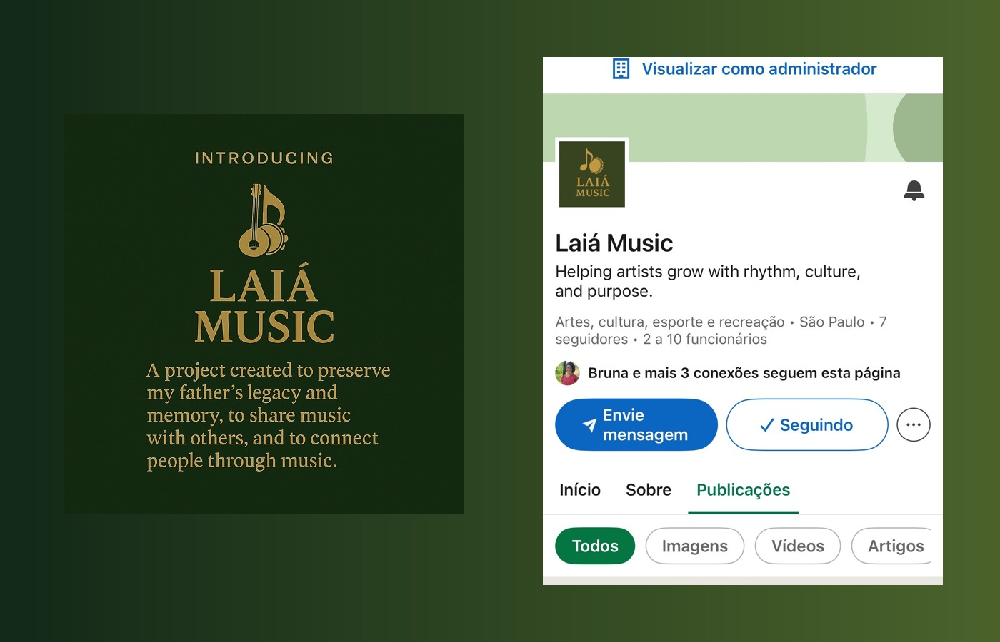

Gestão e expansão de legado
Diagnóstico do acervo, organização de catálogo, reposicionamento de narrativa, oportunidades de licenciamento, estruturação de presença digital e desenho de novas frentes de ativação.
A LAIA Music é uma empresa de gestão, consultoria e desenvolvimento artístico dedicada à preservação de catálogos, expansão de legado, coaching, posicionamento e criação de novas oportunidades de mercado para artistas, famílias, projetos e patrimônios musicais.

A LAIA Music nasce da convicção de que um legado artístico não deve ficar parado no passado. Quando existe método, posicionamento e visão, a memória vira presença, o catálogo vira ativo e a história volta a gerar conexão, relevância e futuro.

A proposta da LAIA Music combina sensibilidade artística com estrutura de negócio. O objetivo é proteger, organizar, reposicionar e ampliar o valor de obras, carreiras e patrimônios musicais.
Diagnóstico do acervo, organização de catálogo, reposicionamento de narrativa, oportunidades de licenciamento, estruturação de presença digital e desenho de novas frentes de ativação.
Direcionamento para artistas e projetos em fase de crescimento, transição, relançamento ou consolidação de marca, com visão de mercado, reputação, comunicação e produto.
Mentoria individual para clareza de posicionamento, visão artística, narrativa profissional, construção de autoridade e próximos passos com coerência entre propósito e mercado.
Criação e estruturação de projetos especiais, ativações de catálogo, memorais, ações institucionais, desdobramentos educativos e conexões com impacto cultural.
Refinamento da apresentação de artistas, catálogos e iniciativas por meio de copy, storytelling, landing pages, pitch institucional, materiais digitais e páginas de portfólio.
Uma atuação voltada a transformar história em valor percebido, ampliando a capacidade de diálogo com parceiros, patrocinadores, plataformas e novas audiências.

O primeiro case estruturado pela LAIA Music é o legado de Edney Fernandes, compositor, cantor, instrumentista e profissional de estúdio com obras interpretadas por nomes relevantes do samba e do pagode brasileiro, além de um catálogo em processo de organização e expansão.
Cada projeto passa por uma jornada de leitura estratégica, organização e expansão. A LAIA Music trabalha para traduzir memória em clareza de proposta, linguagem de mercado e presença duradoura.
Leitura do momento do artista ou catálogo, mapeamento de ativos, narrativa, oportunidades e pontos de desalinhamento.
Estruturação de copy, identidade verbal, apresentação, oferta, narrativa institucional e direção estratégica do projeto.
Desdobramento em site, materiais, conexões, frentes culturais, novas audiências, parcerias e oportunidades de mercado.
Mentoria, coaching, refinamento de presença e suporte em decisões para que o projeto continue consistente e vivo ao longo do tempo.
Se você busca clareza estratégica, organização de catálogo, fortalecimento de marca, coaching ou desenvolvimento de um projeto musical com profundidade e elegância, a LAIA Music pode construir esse caminho com você.